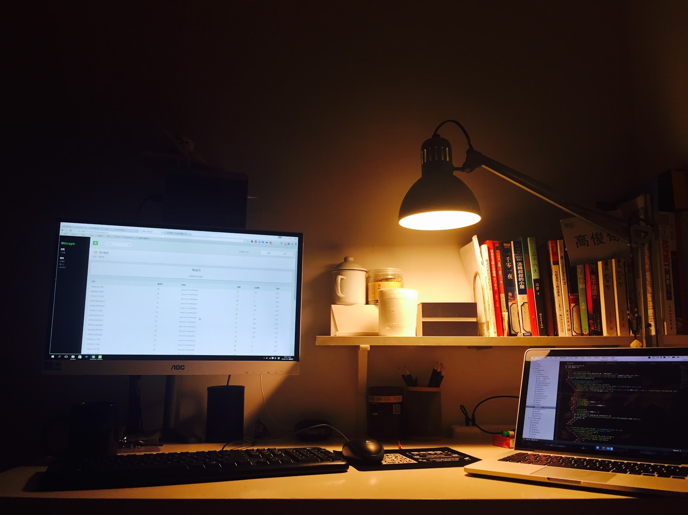

我是Jackey
目前工作在格瓦拉生活, 做运维自动化全端工作
上海
关注我在github上的动态.
简书Python 运维专题创建者和维护者.

我的桌面
Programming
从毕业一年后就开始了做开发相关的任务， 明确的开发经验是从2013年开始， 毕业第一年主要从事运维的工作， 由于工作中需要大量写shell 脚本， 而shell脚本没有高级语言规范， 经常提心吊胆，于是被迫选择了一门高级语言， 受当时Python热潮影响， 理所当然的选择了解释性语言Python。这是编程生涯的开始.
于今为止Github上贡献了约30+Python项目, 为PyPI贡献了1个包.
除了Python还自学了JS, 并在项目中使用了Vue.js, 学习了Go的基础知识.
比较钟情的技术栈有Django、peewee、Ansible、django rest framework、Celery、Vue.js、Semantic UI等, 但不仅限于此.
开发的运维自动化平台多为浏览器作为操作端。擅长使用MQ或Celery开发分布式系统
使用的编辑器为Vim和Sublime Text
我写了一些关于技术的文章，在我的博客